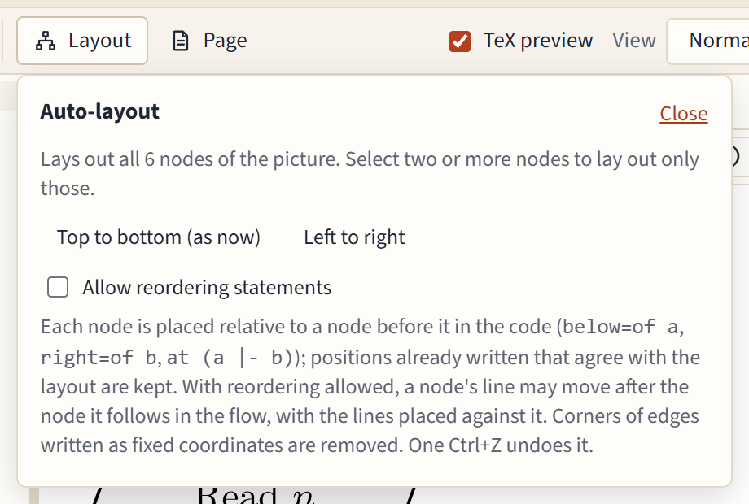

Layout, groups and swimlanes
Automatic layout
Layout in the toolbar arranges the picture for you, Top to bottom or Left to right. The current direction is marked "(as now)".

- It lays out the whole picture, or only the selected nodes when you have selected two or more.
- The result is written the way you would write it: each node relative to one before it (
below=of read,right=of check), with distances only where they are needed. A relation that already says what the layout wants is kept as you wrote it. - Corners of edges written as fixed coordinates are removed, since the nodes they went around have moved. Edges keep their form otherwise.
- Locked nodes stay where they are; the panel names them.
- One Ctrl+Z undoes the whole layout.
A large picture can take a moment: a badge over the canvas shows the progress, and Cancel stops it. The page stays responsive meanwhile.
Allow reordering statements
TikZ can only place a node relative to a node defined before it. With Allow reordering statements ticked, the layout may move a node's line further down the code when that gives a cleaner relation, and only when moving it is safe. It is off by default, because it changes the order of your code.
Groups and lanes
Each lane's nodes stay in their lane. A group's nodes are kept together when the boxes would otherwise cross, or a box would cover another group's node.
Groups
Select some nodes, type a title in Group and lanes in the properties panel if you like, and press Group. The editor draws a box around them, behind everything else:
\node[group, fit=(check) (base), label={[group title]north:Checks}] (checks) {};
It uses the fit and backgrounds libraries and adds them for you. The box follows its nodes when they move; dragging the box moves them all. Click an empty part of a box to give it a title or change it.
Swimlanes
Lanes are boxes that share a top and a bottom (or a left and right side), one per role or phase.
- Select the nodes of the first lane, type its title, and press New lane.
- Select the next lane's nodes and press New lane again.
In a picture that runs down, lanes stand side by side; in one that runs across, they lie one above the other, with their titles turned along the side.
- Drag a node into another lane to move it there; the lanes stretch to stay even.
- Move to lane moves the selected nodes into the lane you pick.
- Take out of removes the selected nodes from their groups and lanes.
- Deleting a node keeps the lanes valid and even.
The Swimlane process and PRISMA 2020 templates show lanes at work.